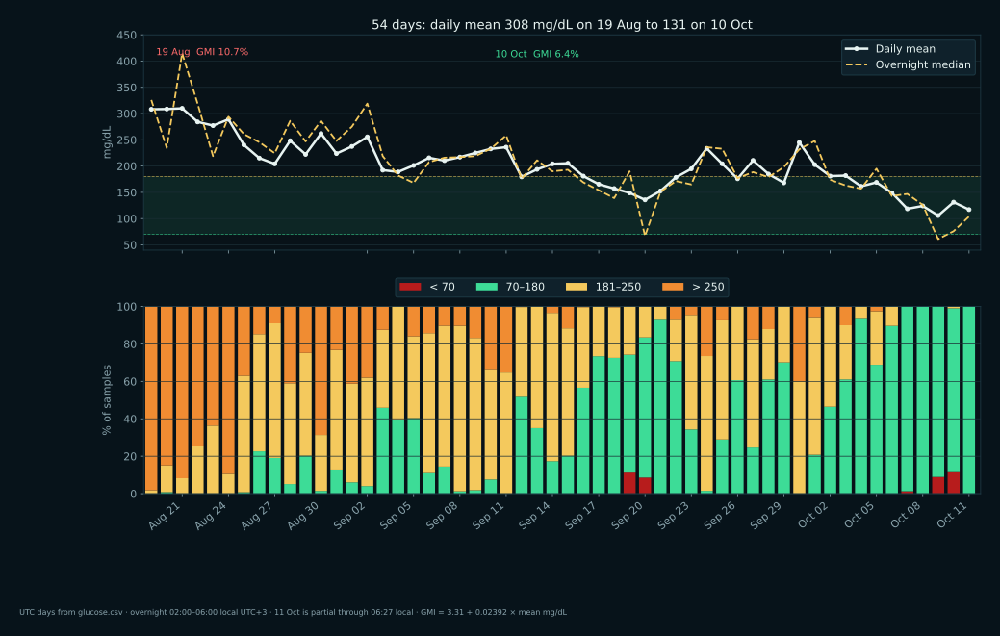
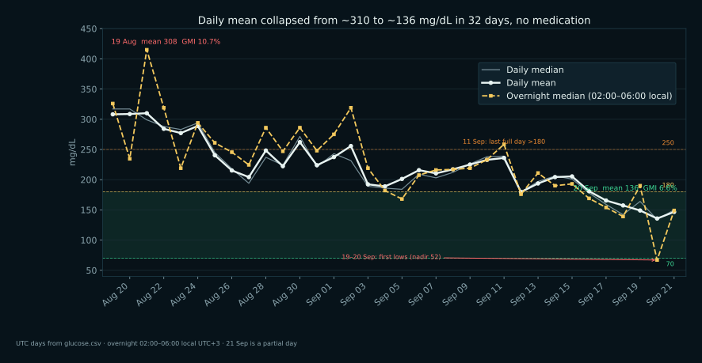
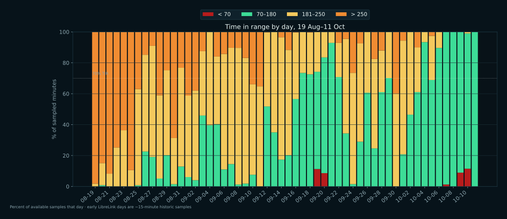
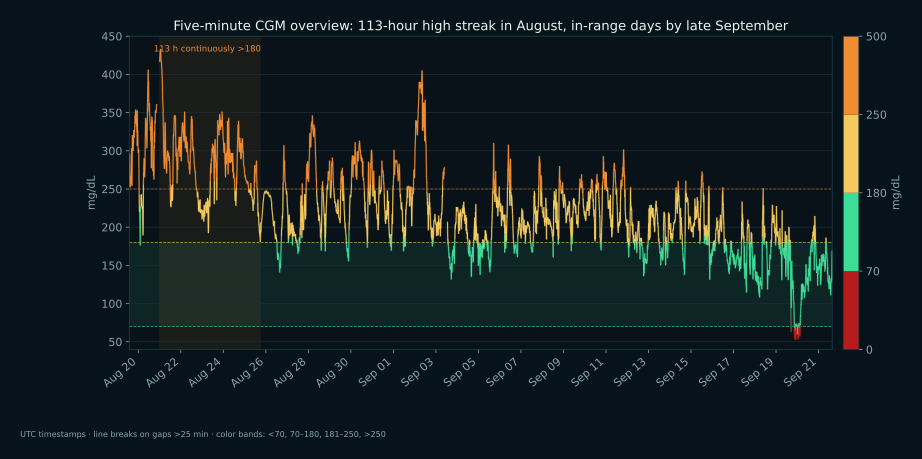
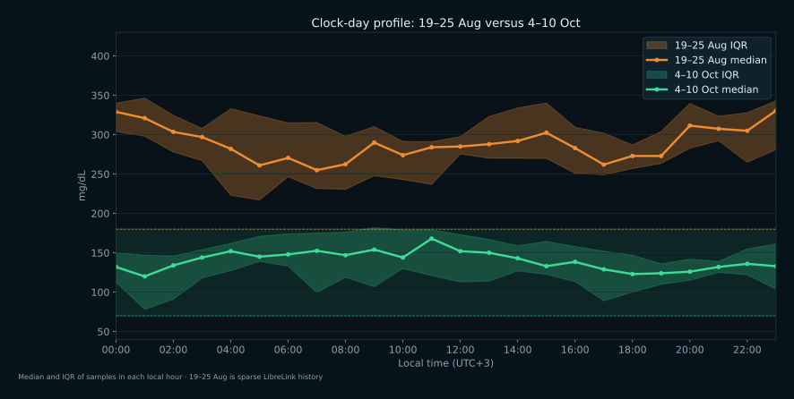

19 August through 11 October 2026. Dense minute-grid from glucose.csv, local time UTC+3. Daily bars use UTC calendar days. Overnight medians use 02:00–06:00 local. Early days are sparse LibreLink samples; denser readings begin 2 September. No glucose-lowering medication. 11 Oct is partial, through 06:27 local.
308 → 131daily mean, 19 Aug → 10 Oct
10.7% → 6.4%GMI from those daily means
0% → 88%time in 70–180
113 hourslongest streak >180, 21–25 Aug

The change, 19 Aug–11 Oct
Daily mean and overnight median on top; stacked time-in-range below. GMI uses 3.31 + 0.02392 × mean.

Daily mean, median, and overnight floor
Overnight medians averaged 296 in 19–25 Aug and 129 in 4–10 Oct. All-day means averaged 288 and 137. 30 Sep rebounds to a daily mean of 245. Readings below 70 fall on 19–20 Sep, 7 Oct, 9–10 Oct. The lowest value is 52. Endpoint stats use the last day with at least 70% of minutes filled, 10 Oct.

Time in range by day
Orange is time above 250, yellow 181–250, green 70–180, dark red below 70. 4–10 Oct is mostly 70–180. Time below 70 shows on 19–20 Sep, 7 Oct, 9–10 Oct.

Five-minute overview trace
The shaded band is 113 hours 29 minutes continuously above 180 (21–25 Aug), peak 433. Color follows the same 70 / 180 / 250 bands.

Clock-day early versus recent
Hour-of-day median and IQR for 19–25 Aug versus 4–10 Oct. 19–25 Aug is sparse LibreLink history; 4–10 Oct is the latest week of filled days.
PNG copies sit next to each SVG. Regenerate with
bin/render-trend-graphs.py.